Android (operating system)
Source: https://en.wikipedia.org/wiki/Android_(operating_system)
Category: products_mobile_and_os
Depth: 1
Summary
Android is an operating system owned by Google which is based on a modified version of the Linux kernel and other open-source software, designed primarily for touchscreen-based mobile devices such as smartphones and tablet computers. Android has historically been developed by a consortium of developers known as the Open Handset Alliance, but its most widely used version is primarily developed by Google. First released in 2008, Android is the world's most widely used operating system; it is the most used operating system for smartphones, and also most used for tablets; the latest version, released on June 10, 2025, is Android 16.
Images
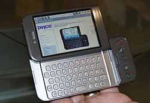
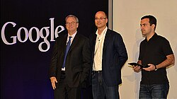
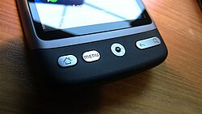
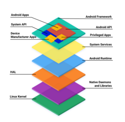
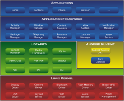
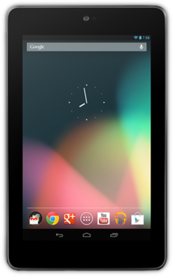
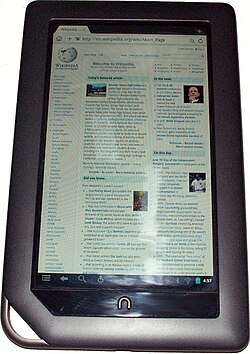
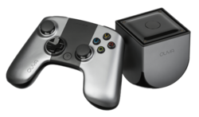
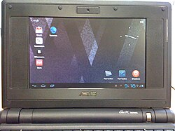
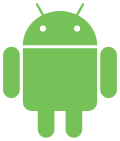
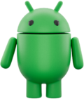
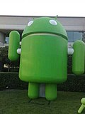
Full Article
Operating system for mobile devices
Linux distribution
Android is an operating system owned by Google which is based on a modified version of the Linux kernel and other open-source software, designed primarily for touchscreen-based mobile devices such as smartphones and tablet computers. Android has historically been developed by a consortium of developers known as the Open Handset Alliance, but its most widely used version is primarily developed by Google. First released in 2008, Android is the world's most widely used operating system; it is the most used operating system for smartphones, and also most used for tablets; the latest version, released on June 10, 2025, is Android 16.
At its core, the operating system is known as the Android Open Source Project (AOSP) and is free and open-source software (FOSS) primarily licensed under the Apache License. However, most devices run the proprietary Android version developed by Google, which ships with additional proprietary closed-source software pre-installed, most notably Google Mobile Services (GMS), which includes core apps such as Google Chrome, the digital distribution platform Google Play, and the associated Google Play Services development platform. Other Google services including Firebase Cloud Messaging, used for push notifications, are recommended for applications. While AOSP is free, the "Android" name and logo are trademarks of Google, who restrict the use of Android branding on "uncertified" products. The majority of smartphones based on AOSP run Google's ecosystem—which is known simply as Android—some with vendor-customized user interfaces and software suites, for example One UI. Numerous modified distributions exist, which include competing Amazon Fire OS, community-developed LineageOS; the source code has also been used to develop a variety of Android distributions on a range of other devices, such as Android TV for televisions, Wear OS for wearables, and Android Automotive for in-car systems. Commercial products like micro consoles and virtual reality headset have also used Android.
Software packages on Android, which use the APK format, are generally distributed through a proprietary application store; non-Google platforms include vendor-specific Amazon Appstore, Samsung Galaxy Store, Huawei AppGallery, and third-party companies Aptoide, Cafe Bazaar, GetJar or open source F-Droid. Since 2011 Android has been the most used operating system worldwide on smartphones. It has the largest installed base of any operating system in the world with over three billion monthly active users and accounting for 46% of the global operating system market.
History
See also: Android version history
2000s
Android Inc. was founded in Palo Alto, California, in October 2003 by Andy Rubin and Chris White, with Rich Miner and Nick Sears joining later. Rubin had previously been the creator of the T-Mobile Sidekick under his previous company Danger, Inc. Rubin and White started out to build an operating system for digital cameras viz FotoFrame. The company name was changed to Android as Rubin already owned the domain name android.com. After having built a prototype internally known as the "Fadden demo" predominantly by purchasing licensing agreements for most of the software components built around a custom JavaScript front-end, the company failed to convince investors, and so in April 2004 they pivoted to building an operating system for phones at the suggestion of Nick Sears, as a rival to Symbian and Microsoft Windows Mobile. Rubin pitched the Android project as having "tremendous potential in developing smarter mobile devices that are more aware of its owner's location and preferences". Due to difficulty attracting investors early on, Android faced potential eviction from its office space. Steve Perlman, a close friend of Rubin, brought him $10,000 in cash in an envelope, and shortly thereafter wired an undisclosed amount as seed funding. Perlman refused a stake in the company, and has stated "I did it because I believed in the thing, and I wanted to help Andy."
In 2005, Rubin tried to negotiate deals with Samsung and HTC. Shortly afterwards, Google acquired the company in July of that year for at least $50 million; this was Google's "best deal ever" according to Google's then-vice president of corporate development, David Lawee, in 2010. Android's key employees, including Rubin, Miner, Sears, and White, joined Google as part of the acquisition. Not much was known about the secretive Android Inc. at the time, with the company having provided few details other than that it was making software for mobile phones. At Google, the team led by Rubin developed a mobile device platform powered by the Linux kernel. Google marketed the platform to handset makers and carriers on the promise of providing a flexible, upgradeable system. Google had "lined up a series of hardware components and software partners and signaled to carriers that it was open to various degrees of cooperation".[attribution needed]
Speculation about Google's intention to enter the mobile communications market continued to build through December 2006. An early prototype had a close resemblance to a BlackBerry phone, with no touchscreen and a physical QWERTY keyboard, but the arrival of Apple's 2007 iPhone meant that Android "had to go back to the drawing board". Google later changed its Android specification documents to state that "Touchscreens will be supported", although "the Product was designed with the presence of discrete physical buttons as an assumption, therefore a touchscreen cannot completely replace physical buttons". By 2008, both Nokia and BlackBerry announced touch-based smartphones to rival the iPhone 3G, and Android's focus eventually switched to just touchscreens. The first commercially available smartphone running Android was the HTC Dream, also known as T-Mobile G1, announced on September 23, 2008.
On November 5, 2007, the Open Handset Alliance, a consortium of technology companies including Google, device manufacturers such as HTC, Motorola and Samsung, wireless carriers such as Sprint and T-Mobile, and chipset makers such as Qualcomm and Texas Instruments, unveiled itself, with a goal to develop "the first truly open and comprehensive platform for mobile devices". Within a year, the Open Handset Alliance faced two other open source competitors, the Symbian Foundation and the LiMo Foundation, the latter also developing a Linux-based mobile operating system like Google. In September 2007, Google had filed several patent applications in the area of mobile telephony.
On September 23, 2008, Android was introduced by Andy Rubin, Larry Page, Sergey Brin, Cole Brodman, Christopher Schlaeffer and Peter Chou at a press conference in a New York City subway station.
Since 2008, Android has seen numerous updates which have incrementally improved the operating system, adding new features and fixing bugs in previous releases. The first two Android versions were internally codenamed Astro Boy and Bender but licensing issues meant subsequent releases were named after dessert or sugary treat in an alphabetical order, with the first few Android versions being called "Petit Four", "Cupcake", "Donut", "Eclair", and "Froyo", in that order. During its announcement of Android KitKat in 2013, Google explained that "Since these devices make our lives so sweet, each Android version is named after a dessert", although a Google spokesperson told CNN in an interview that "It's kind of like an internal team thing, and we prefer to be a little bit—how should I say—a bit inscrutable in the matter, I'll say".
2010s
In 2010, Google launched its Nexus series of devices, a lineup in which Google partnered with different device manufacturers to produce new devices and introduce new Android versions. The series was described as having "played a pivotal role in Android's history by introducing new software iterations and hardware standards across the board", and became known for its "bloat-free" software with "timely ... updates". At its developer conference in May 2013, Google announced a special version of the Samsung Galaxy S4, where, instead of using Samsung's own Android customization, the phone ran "stock Android" and was promised to receive new system updates fast. The device would become the start of the Google Play edition program, and was followed by other devices, including the HTC One Google Play edition, and Moto G Google Play edition. In 2015, Ars Technica wrote that "Earlier this week, the last of the Google Play edition Android phones in Google's online storefront were listed as "no longer available for sale" and that "Now they're all gone, and it looks a whole lot like the program has wrapped up".
From 2008 to 2013, Hugo Barra served as product spokesperson, representing Android at press conferences and Google I/O, Google's annual developer-focused conference. He left Google in August 2013 to join Chinese phone maker Xiaomi. Less than six months earlier, Google's then-CEO Larry Page announced in a blog post that Andy Rubin had moved from the Android division to take on new projects at Google, and that Sundar Pichai would become the new Android lead. Pichai himself would eventually switch positions, becoming the new CEO of Google in August 2015 following the company's restructure into the Alphabet conglomerate, making Hiroshi Lockheimer the new head of Android.
On Android 4.4, KitKat, shared writing access to MicroSD memory cards has been locked for user-installed applications, to which only the dedicated directories with respective package names, located inside Android/data/, remained writeable. Writing access has been reinstated with Android 5 Lollipop through the backwards-incompatible Google Storage Access Framework interface.
In June 2014, Google announced Android One, a set of "hardware reference models" that would "allow [device makers] to easily create high-quality phones at low costs", designed for consumers in developing countries. In September, Google announced the first set of Android One phones for release in India. However, Recode reported in June 2015 that the project was "a disappointment", citing "reluctant consumers and manufacturing partners" and "misfires from the search company that has never quite cracked hardware". Plans to relaunch Android One surfaced in August 2015, with Africa announced as the next location for the program a week later. A report from The Information in January 2017 stated that Google is expanding its low-cost Android One program into the United States, although The Verge notes that the company will presumably not produce the actual devices itself. Google introduced the Pixel and Pixel XL smartphones in October 2016, marketed as being the first phones made by Google, and exclusively featured certain software features, such as the Google Assistant, before wider rollout. The Pixel phones replaced the Nexus series, with a new generation of Pixel phones launched in October 2017.
In May 2019, the operating system became entangled in the trade war between China and the United States involving Huawei, which, like many other tech firms, had become dependent on access to the Android platform. In the summer of 2019, Huawei announced it would create an alternative operating system to Android known as Harmony OS, and has filed for intellectual property rights across major global markets. Under such sanctions Huawei has long-term plans to replace Android in 2022 with the new operating system, as Harmony OS was originally designed for internet of things devices, rather than for smartphones and tablets.
On August 22, 2019, it was announced that Android "Q" would officially be branded as Android 10, ending the historic practice of naming major versions after desserts. Google stated that these names were not "inclusive" to international users (due either to the aforementioned foods not being internationally known, or being difficult to pronounce in some languages). On the same day, Android Police reported that Google had commissioned a statue of a giant number "10" to be installed in the lobby of the developers' new office. Android 10 was released on September 3, 2019, to Google Pixel phones first.
2020s
In late 2021, some users reported that they were unable to dial emergency services. The problem was caused by a combination of bugs in Android and in the Microsoft Teams app; both companies released updates addressing the issue.
On December 12, 2024, Google announced Android XR. It is a new operating system developed by Google, designed for virtual reality and augmented reality devices, such as VR headsets and smart glasses. It was built in collaboration with Samsung and Qualcomm. The platform is also focused on supporting developers with tools like ARCore and Unity to build applications for upcoming XR devices.
In March 2025, Google announced its plans to consolidate Android development to internal sources. While public developers will no longer be able to contribute, the Android source will still be published.
Features
Main article: List of features in Android
Interface
Android's default user interface is mainly based on direct manipulation, using touch inputs that loosely correspond to real-world actions, like swiping, tapping, pinching, and reverse pinching to manipulate on-screen objects, along with a virtual keyboard. Game controllers and full-size physical keyboards are supported via Bluetooth or USB. The response to user input is designed to be immediate and provides a fluid touch interface, often using the vibration capabilities of the device to provide haptic feedback to the user. Internal hardware, such as accelerometers, gyroscopes and proximity sensors are used by some applications to respond to additional user actions, for example adjusting the screen from portrait to landscape depending on how the device is oriented, or allowing the user to steer a vehicle in a racing game by rotating the device, simulating control of a steering wheel.
Home screen
Android devices boot to the home screen, the primary navigation and information "hub" on Android devices, analogous to the desktop found on personal computers. Android home screens are typically made up of app icons and widgets; app icons launch the associated app, whereas widgets display live, auto-updating content, such as a weather forecast, the user's email inbox, or a news ticker directly on the home screen. A home screen may be made up of several pages, between which the user can swipe back and forth. Third-party apps available on Google Play and other app stores can extensively re-theme the home screen, and even mimic the look of other operating systems, such as Windows Phone. Most manufacturers customize the look and features of their Android devices to differentiate themselves from their competitors.
Status bar
Along the top of the screen is a status bar, showing information about the device and its connectivity. This status bar can be pulled (swiped) down to reveal a notification screen where apps display important information or updates, as well as quick access to system controls and toggles such as display brightness, connectivity settings (WiFi, Bluetooth, cellular data), audio mode, and flashlight. Vendors may implement extended settings such as the ability to adjust the flashlight brightness.
Notifications
Notifications are "short, timely, and relevant information about your app when it's not in use", and when tapped, users are directed to a screen inside the app relating to the notification. Beginning with Android 4.1 "Jelly Bean", "expandable notifications" allow the user to tap an icon on the notification in order for it to expand and display more information and possible app actions right from the notification.
App lists
An "All Apps" screen lists all installed applications, with the ability for users to drag an app from the list onto the home screen. The app list may be accessed using a gesture or a button, depending on the Android version. A "Recents" screen, also known as "Overview", lets users switch between recently used apps.
The recent list may appear side-by-side or overlapping, depending on the Android version and manufacturer.
Navigation buttons
Many early Android OS smartphones were equipped with a dedicated search button for quick access to a web search engine and individual apps' internal search feature. More recent devices typically allow the former through a long press or swipe away from the home button.
The dedicated option key, also known as menu key, and its on-screen simulation, is no longer supported since Android version 10. Google recommends mobile application developers to locate menus within the user interface. On more recent phones, its place is occupied by a task key used to access the list of recently used apps when actuated. Depending on device, its long press may simulate a menu button press or engage split screen view, the latter of which is the default behaviour since stock Android version 7.
Split-screen view
Native support for split screen view has been added in stock Android version 7.0 Nougat.
The earliest vendor-customized Android-based smartphones known to have featured a split-screen view mode are the 2012 Samsung Galaxy S3 and Note 2, the former of which received this feature with the premium suite upgrade delivered in TouchWiz with Android 4.1 Jelly Bean.
Charging while powered off
When connecting or disconnecting charging power and when briefly actuating the power button or home button, all while the device is powered off, a visual battery meter whose appearance varies among vendors appears on the screen, allowing the user to quickly assess the charge status of a powered-off device without having to start it. Some display the battery percentage.
Desktop mode
Android has supported a rudimentary Desktop Mode in developer options. A native desktop mode was rolled out in March 2026 to Pixel devices from the Pixel 8 onward; tablets received it with Android 16 QPR3, with the intention to roll this feature out to more devices in the future.
Applications
See also: Android software development and Google Play
Most Android devices come with preinstalled Google apps including Gmail, Google Maps, Google Chrome, YouTube, Google Play Movies & TV, and others.
Applications ("apps"), which extend the functionality of devices, are written using the Android software development kit (SDK) and, often, Kotlin programming language, which replaced Java as Google's preferred language for Android app development in May 2019, and was originally announced in May 2017. Java is still supported (originally the only option for user-space programs, and is often mixed with Kotlin), as is C++. Java or other JVM languages, such as Kotlin, may be combined with C/C++, together with a choice of non-default runtimes that allow better C++ support.
The SDK includes a comprehensive set of development tools, including a debugger, software libraries, a handset emulator based on QEMU, documentation, sample code, and tutorials. Initially, Google's supported integrated development environment (IDE) was Eclipse using the Android Development Tools (ADT) plugin; in December 2014, Google released Android Studio, based on IntelliJ IDEA, as its primary IDE for Android application development. Other development tools are available, including a native development kit (NDK) for applications or extensions in C or C++, Google App Inventor, a visual environment for novice programmers, and various cross platform mobile web applications frameworks. In January 2014, Google unveiled a framework based on Apache Cordova for porting Chrome HTML 5 web applications to Android, wrapped in a native application shell. Additionally, Firebase was acquired by Google in 2014 that provides helpful tools for app and web developers.
Android has a growing selection of third-party applications, which can be acquired by users by downloading and installing the application's APK (Android application package) file, or by downloading them using an application store program that allows users to install, update, and remove applications from their devices. Google Play Store is the primary application store installed on Android devices that comply with Google's compatibility requirements and license the Google Mobile Services software. Google Play Store allows users to browse, download and update applications published by Google and third-party developers; as of January 2021[update], there are more than three million applications available for Android in Play Store. As of July 2013[update], 50 billion application installations had been performed. Some carriers offer direct carrier billing for Google Play application purchases, where the cost of the application is added to the user's monthly bill. As of May 2017[update], there are over one billion active users a month for Gmail, Android, Chrome, Google Play and Maps.
Due to the open nature of Android, a number of third-party application marketplaces also exist for Android, either to provide a substitute for devices that are not allowed to ship with Google Play Store, provide applications that cannot be offered on Google Play Store due to policy violations, or for other reasons. Examples of these third-party stores have included the Amazon Appstore, GetJar, and SlideMe. F-Droid, another alternative marketplace, seeks to only provide applications that are distributed under free and open source licenses.
In October 2020, Google removed several Android applications from Play Store, as they were identified breaching its data collection rules. The firm was informed by International Digital Accountability Council (IDAC) that apps for children like Number Coloring, Princess Salon and Cats & Cosplay, with collective downloads of 20 million, were violating Google's policies.
At the Windows 11 announcement event in June 2021, Microsoft showcased the new Windows Subsystem for Android (WSA) to enable support for the Android Open Source Project (AOSP), but it has since been deprecated. It was intended to allow users to run Android apps and games on their Windows 11 desktop. Microsoft ended WSA support on March 5, 2025.
Storage
The storage of Android devices can be expanded using secondary devices such as SD cards. Android recognizes two types of secondary storage: portable storage (which is used by default), and adoptable storage. Portable storage is treated as an external storage device. Adoptable storage, introduced on Android 6.0, allows the internal storage of the device to be spanned with the SD card, treating it as an extension of the internal storage. This has the disadvantage of preventing the memory card from being used with another device unless it is reformatted.
Android 4.4 introduced the Storage Access Framework (SAF), a set of APIs for accessing files on the device's filesystem. As of Android 11, Android has required apps to conform to a data privacy policy known as scoped storage, under which apps may only automatically have access to certain directories (such as those for pictures, music, and video), and app-specific directories they have created themselves. Apps are required to use the SAF to access any other part of the filesystem.
Memory management
Since Android devices are usually battery-powered, Android is designed to manage processes to keep power consumption at a minimum. When an application is not in use the system suspends its operation so that, while available for immediate use rather than closed, it does not use battery power or CPU resources. Android manages the applications stored in memory automatically: when memory is low, the system will begin invisibly and automatically closing inactive processes, starting with those that have been inactive for the longest amount of time. Lifehacker reported in 2011 that third-party task-killer applications were doing more harm than good.
Developer options
Some settings for use by developers for debugging and power users are located in a "Developer options" sub menu, such as the ability to highlight updating parts of the display, show an overlay with the current status of the touch screen, show touching spots for possible use in screencasting, notify the user of unresponsive background processes with the option to end them ("Show all ANRs", i.e. "App's Not Responding"), prevent a Bluetooth audio client from controlling the system volume ("Disable absolute volume"), and adjust the duration of transition animations or deactivate them completely to speed up navigation.
Developer options are initially hidden since Android 4.2 "Jelly Bean", but can be enabled by actuating the operating system's build number in the device information seven times. Hiding developers options again requires deleting user data for the "Settings" app, possibly resetting some other preferences, or in recent Android versions, turning off the Developer options master switch.
Hardware
See also: Android hardware requirements
The main hardware platform for Android is 64-bit ARM (i.e. the ARMv8-A architecture) and the 32-bit ARMv7-A architecture, with x86-64 and the 32-bit x86 architectures also being officially supported in later versions of Android. The unofficial Android-x86 project provided support for x86 architectures ahead of the official support. Since 2012, Android devices with Intel processors began to appear, including phones and tablets. While gaining support for 64-bit platforms, Android was first made to run on 64-bit x86 and then on ARM64. An unofficial experimental port of the operating system to 64-bit RISC-V architecture was released in 2021. 32- and 64-bit MIPS was once supported.
Requirements for the minimum amount of RAM for smartphones running Android 15 range from 4 GB of RAM for full Android to 2 GB, in which case the smartphone manufacturers must use the Android Go Edition. Android supports all versions of OpenGL ES and Vulkan (and version 1.1 available for some devices).
Android devices incorporate many optional hardware components, including still or video cameras, GPS, orientation sensors, dedicated gaming controls, accelerometers, gyroscopes, barometers, magnetometers, proximity sensors, pressure sensors, thermometers, and touchscreens. Some hardware components are not required, but became standard in certain classes of devices, such as smartphones, and additional requirements apply if they are present. Some other hardware was initially required, but those requirements have been relaxed or eliminated altogether. For example, as Android was developed initially as a phone OS, hardware such as microphones were required, while over time the phone function became optional. Android used to require an autofocus camera, which was relaxed to a fixed-focus camera if present at all, since the camera was dropped as a requirement entirely when Android started to be used on set-top boxes.
In addition to running on smartphones and tablets, several vendors run Android natively on regular PC hardware with a keyboard and mouse. In addition to their availability on commercially available hardware, similar PC hardware-friendly versions of Android are freely available from the Android-x86 project, including customized Android 4.4. Using the Android emulator that is part of the Android SDK, or third-party emulators, Android can also run non-natively on x86 architectures. Chinese companies are building a PC and mobile operating system, based on Android, to "compete directly with Microsoft Windows and Google Android". The Chinese Academy of Engineering noted that "more than a dozen" companies were customizing Android following a Chinese ban on the use of Windows 8 on government PCs.
Devices
Android runs on a wide variety of devices such as smartphones, tablets, cars, computers, smart watches, and smart TVs. However, the vast majority of Android-powered devices are smartphones. Unlike its two main competitors in the mobile operating system space, namely iOS and HarmonyOS, Android devices are made by many different original equipment manufacturers. These OEMs include Samsung, Xiaomi, Vivo, Oppo, iQOO, OnePlus, Honor, Google, Sony, Lenovo, Sharp, Realme, Nothing, and Tecno.
Development
Android is developed by Google until the latest changes and updates are ready to be released, at which point the source code is made available to the Android Open Source Project (AOSP), an open source initiative led by Google. The first source code release happened as part of the initial release in 2007. All releases are under the Apache License.
The AOSP code can be found with minimal modifications on select devices, mainly the former Nexus and current Android One series of devices. However, most original equipment manufacturers (OEMs) customize the source code to run on their hardware.
Android's source code does not contain the device drivers, often proprietary, that are needed for certain hardware components, and does not contain the source code of Google Play Services, which many apps depend on. As a result, most Android devices, including Google's own, ship with a combination of free and open source and proprietary software, with the software required for accessing Google services falling into the latter category.[citation needed] In response to this, there are some projects that build complete operating systems based on AOSP as free software, the first being CyanogenMod (see section Open-source community below).
Update schedule
See also: Android version history
Summary of versions
| Version | Release date |
|---|---|
| 1.0 | September 23, 2008 |
| 1.1 | February 9, 2009 |
| 1.5 (Cupcake) | April 27, 2009 |
| 1.6 (Donut) | September 15, 2009 |
| 2.0−2.1 (Eclair) | October 26, 2009 |
| 2.2 (Froyo) | May 20, 2010 |
| 2.3 (Gingerbread) | December 6, 2010 |
| 3.0 (Honeycomb) | February 22, 2011 |
| 4.0 (Ice Cream Sandwich) | October 18, 2011 |
| 4.1−4.2−4.3 (Jelly Bean) | July 9, 2012 |
| 4.4 (KitKat) | October 31, 2013 |
| 5.0−5.1 (Lollipop) | November 12, 2014 |
| 6.0 (Marshmallow) | October 5, 2015 |
| 7.0−7.1 (Nougat) | August 22, 2016 |
| 8.0−8.1 (Oreo) | August 21, 2017 |
| 9 (Pie) | August 6, 2018 |
| 10 | September 3, 2019 |
| 11 | September 8, 2020 |
| 12−12L | October 4, 2021 |
| 13 | August 15, 2022 |
| 14 | October 4, 2023 |
| 15 | October 15, 2024 |
| 16 | June 10, 2025 |
Google provides annual Android releases, both for factory installation in new devices, and for over-the-air updates to existing devices. The latest major release is Android 16.
The extensive variation of hardware in Android devices has caused significant delays for software upgrades and security patches. Each upgrade has had to be specifically tailored, a time- and resource-consuming process. Except for devices within the Google Nexus and Pixel brands, updates have often arrived months after the release of the new version, or not at all. Manufacturers often prioritize their newest devices and leave old ones behind. Additional delays can be introduced by wireless carriers who, after receiving updates from manufacturers, further customize Android to their needs and conduct extensive testing on their networks before sending out the upgrade. There are also situations in which upgrades are impossible due to a manufacturer not updating necessary drivers.
The lack of after-sale support from manufacturers and carriers has been widely criticized by consumer groups and the technology media. Some commentators have noted that the industry has a financial incentive not to upgrade their devices, as the lack of updates for existing devices fuels the purchase of newer ones, an attitude described as "insulting". The Guardian complained that the method of distribution for updates is complicated only because manufacturers and carriers have designed it that way. In 2011, Google partnered with a number of industry players to announce an "Android Update Alliance", pledging to deliver timely updates for every device for 18 months after its release; however, there has not been another official word about that alliance since its announcement.
In 2012, Google began de-coupling certain aspects of the operating system (particularly its central applications) so they could be updated through the Google Play store independently of the OS. One of those components, Google Play Services, is a closed-source system-level process providing APIs for Google services, installed automatically on nearly all devices running Android 2.2 "Froyo" and higher. With these changes, Google can add new system functions and update apps without having to distribute an upgrade to the operating system itself. As a result, Android 4.2 and 4.3 "Jelly Bean" contained relatively fewer user-facing changes, focusing more on minor changes and platform improvements.
HTC's then-executive Jason Mackenzie called monthly security updates "unrealistic" in 2015, and Google was trying to persuade carriers to exclude security patches from the full testing procedures. In May 2016, Bloomberg Businessweek reported that Google was making efforts to keep Android more up-to-date, including accelerated rates of security updates, rolling out technological workarounds, reducing requirements for phone testing, and ranking phone makers in an attempt to "shame" them into better behavior. As stated by Bloomberg: "As smartphones get more capable, complex and hackable, having the latest software work closely with the hardware is increasingly important". Hiroshi Lockheimer, the Android lead, admitted that "It's not an ideal situation", further commenting that the lack of updates is "the weakest link on security on Android". Wireless carriers were described in the report as the "most challenging discussions", due to their slow approval time while testing on their networks, despite some carriers, including Verizon Wireless and Sprint Corporation, already shortening their approval times. In a further effort for persuasion, Google shared a list of top phone makers measured by updated devices with its Android partners, and is considering making the list public.[when?] Mike Chan, co-founder of phone maker Nextbit and former Android developer, said that "The best way to solve this problem is a massive re-architecture of the operating system", "or Google could invest in training manufacturers and carriers 'to be good Android citizens'".
In May 2017, with the announcement of Android 8.0, Google introduced Project Treble, a major re-architect of the Android OS framework designed to make it easier, faster, and less costly for manufacturers to update devices to newer versions of Android. Project Treble separates the vendor implementation (device-specific, lower-level software written by silicon manufacturers) from the Android OS framework via a new "vendor interface". In Android 7.0 and earlier, no formal vendor interface exists, so device makers must update large portions of the Android code to move a device to a newer version of the operating system. With Treble, the new stable vendor interface provides access to the hardware-specific parts of Android, enabling device makers to deliver new Android releases simply by updating the Android OS framework, "without any additional work required from the silicon manufacturers."
In September 2017, Google's Project Treble team revealed that, as part of their efforts to improve the security lifecycle of Android devices, Google had managed to get the Linux Foundation to agree to extend the support lifecycle of the Linux Long-Term Support (LTS) kernel branch from the 2 years that it has historically lasted to 6 years for future versions of the LTS kernel, starting with Linux kernel 4.4.
In May 2019, with the announcement of Android 10, Google introduced Project Mainline to simplify and expedite delivery of updates to the Android ecosystem. Project Mainline enables updates to core OS components through the Google Play Store. As a result, important security and performance improvements that previously needed to be part of full OS updates can be downloaded and installed as easily as an app update.
Google reported rolling out new amendments in Android 12 aimed at making the use of third-party application stores easier. This announcement rectified the concerns reported regarding the development of Android apps, including a fight over an alternative in-app payment system and difficulties faced by businesses moving online because of COVID-19.
Linux kernel
Android's kernel is based on the Linux kernel's long-term support (LTS) branches. As of 2024[update], Android (14) uses versions 6.1 or 5.15 (for "Feature kernels", can be older for "Launch kernels", e.g. android12-5.10, android11-5.4, depending on Android version down to e.g. android11-5.4, android-4.14-stable, android-4.9-q), and older Android versions, use version 5.15 or a number of older kernels. The actual kernel depends on the individual device.
Android's variant of the Linux kernel has further architectural changes that are implemented by Google outside the typical Linux kernel development cycle, such as the inclusion of components like device trees, ashmem, ION, and different out of memory (OOM) handling. Certain features that Google contributed back to the Linux kernel, notably a power management feature called "wakelocks", were initially rejected by mainline kernel developers partly because they felt that Google did not show any intent to maintain its own code. Google announced in April 2010 that they would hire two employees to work with the Linux kernel community, but Greg Kroah-Hartman, the current Linux kernel maintainer for the stable branch, said in December 2010 that he was concerned that Google was no longer trying to get their code changes included in mainstream Linux. Google engineer Patrick Brady once stated in the company's developer conference that "Android is not Linux", with Computerworld adding that "Let me make it simple for you, without Linux, there is no Android". Ars Technica wrote that "Although Android is built on top of the Linux kernel, the platform has very little in common with the conventional desktop Linux stack".
In August 2011, Linus Torvalds said that "eventually Android and Linux would come back to a common kernel, but it will probably not be for four to five years". In December 2011, Greg Kroah-Hartman announced the start of Android Mainlining Project, which aims to put some Android drivers, patches and features back into the Linux kernel, starting in Linux 3.3. Linux included the autosleep and wakelocks capabilities in the 3.5 kernel, after many previous attempts at a merger. The interfaces are the same but the upstream Linux implementation allows for two different suspend modes: to memory (the traditional suspend that Android uses), and to disk (hibernate, as it is known on the desktop). Google maintains a public code repository that contains their experimental work to re-base Android off the latest stable Linux versions.
Android is a Linux distribution according to the Linux Foundation, Google's open-source chief Chris DiBona, and several journalists. Others, such as Google engineer Patrick Brady, say that Android is not Linux in the traditional Unix-like Linux distribution sense; Android does not include the GNU C Library (it uses Bionic as an alternative C library) and some other components typically found in Linux distributions.
With the release of Android Oreo in 2017, Google began to require that devices shipped with new SoCs had Linux kernel version 4.4 or newer, for security reasons. Existing devices upgraded to Oreo, and new products launched with older SoCs, were exempt from this rule.
Rooting
Main article: Rooting (Android)
The flash storage on Android devices is split into several partitions, such as /system/ for the operating system itself, and /data/ for user data and application installations.
In contrast to typical desktop Linux distributions, Android device owners are not given root access to the operating system and sensitive partitions such as /system/ are partially read-only. However, root access can be obtained by exploiting security flaws in Android, which is used frequently by the open-source community to enhance the capabilities and customizability of their devices, but also by malicious parties to install viruses and malware. Root access can also be obtained by unlocking the bootloader which is available on most Android devices, for example on most Google Pixel, OnePlus and Nothing models OEM Unlocking option in the developer settings allows the user to unlock the bootloader with Fastboot, afterward, custom software may be installed. Some OEMs have their own methods. The unlocking process resets the system to factory state, erasing all user data. Proprietary frameworks like Samsung Knox limit or block attempts at rooting. Google's Play Integrity API allows developers to check for any signs of tampering, although the fairness of the tests have been criticized.
Software stack
On top of the Linux kernel, there are the middleware, libraries and APIs written in C, and application software running on an application framework which includes Java-compatible libraries. Development of the Linux kernel continues independently of Android's other source code projects.
Android uses Android Runtime (ART) as its runtime environment (introduced in version 4.4), which uses ahead-of-time (AOT) compilation to entirely compile the application bytecode into machine code upon the installation of an application. In Android 4.4, ART was an experimental feature and not enabled by default; it became the only runtime option in the next major version of Android, 5.0. In versions no longer supported, until version 5.0 when ART took over, Android previously used Dalvik as a process virtual machine with trace-based just-in-time (JIT) compilation to run Dalvik "dex-code" (Dalvik Executable), which is usually translated from the Java bytecode. Following the trace-based JIT principle, in addition to interpreting the majority of application code, Dalvik performs the compilation and native execution of select frequently executed code segments ("traces") each time an application is launched.
For its Java library, the Android platform uses a subset of the now discontinued Apache Harmony project. In December 2015, Google announced that the next version of Android would switch to a Java implementation based on the OpenJDK project.
Android's standard C library, Bionic, was developed by Google specifically for Android, as a derivation of the BSD's standard C library code. Bionic itself has been designed with several major features specific to the Linux kernel. The main benefits of using Bionic instead of the GNU C Library (glibc) or uClibc are its smaller runtime footprint, and optimization for low-frequency CPUs. At the same time, Bionic is licensed under the terms of the BSD licence, which Google finds more suitable for the Android's overall licensing model.
Aiming for a different licensing model, toward the end of 2012, Google switched the Bluetooth stack in Android from the GPL-licensed BlueZ to the Apache-licensed BlueDroid. A new Bluetooth stack, called Gabeldorsche, was developed to try to fix the bugs in the BlueDroid implementation.
Android does not have a native X Window System by default, nor does it support the full set of standard GNU libraries. This made it difficult to port existing Linux applications or libraries to Android, until version r5 of the Android Native Development Kit brought support for applications written completely in C or C++. Libraries written in C may also be used in applications by injection of a small shim and usage of the JNI.
In current versions of Android, "Toybox", a collection of command-line utilities (mostly for use by apps, as Android does not provide a command-line interface by default), is used (since the release of Marshmallow) replacing a similar "Toolbox" collection found in previous Android versions.
Android has another operating system, Trusty OS, within it, as a part of "Trusty" "software components supporting a Trusted Execution Environment (TEE) on mobile devices." "Trusty and the Trusty API are subject to change. [..] Applications for the Trusty OS can be written in C/C++ (C++ support is limited), and they have access to a small C library. [..] All Trusty applications are single-threaded; multithreading in Trusty userspace currently is unsupported. [..] Third-party application development is not supported in" the current version, and software running on the OS and processor for it, run the "DRM framework for protected content. [..] There are many other uses for a TEE such as mobile payments, secure banking, full-disk encryption, multi-factor authentication, device reset protection, replay-protected persistent storage, wireless display ("cast") of protected content, secure PIN and fingerprint processing, and even malware detection."
Open-source community
See also: List of custom Android distributions
Android's source code is released by Google under an open-source license, and its open nature has encouraged a large community of developers and enthusiasts to use the open-source code as a foundation for community-driven projects, which deliver updates to older devices, add new features for advanced users or bring Android to devices originally shipped with other operating systems. These community-developed releases often bring new features and updates to devices faster than through the official manufacturer/carrier channels, with a comparable level of quality; provide continued support for older devices that no longer receive official updates; or bring Android to devices that were officially released running other operating systems, such as the HP TouchPad. Community releases often come pre-rooted and contain modifications not provided by the original vendor, such as the ability to overclock or over/undervolt the device's processor, or security enhancements beyond what is included in the stock OS.
CyanogenMod was the most widely used community firmware; after its abrupt discontinuation in 2016, a community fork known as LineageOS was established as a spiritual continuation of the project.
Historically, device manufacturers and mobile carriers have typically been unsupportive of third-party firmware development. Manufacturers express concern about improper functioning of devices running unofficial software and the support costs resulting from this. Moreover, modified firmware such as CyanogenMod sometimes offer features, such as tethering, for which carriers would otherwise charge a premium. As a result, technical obstacles including locked bootloaders and restricted access to root permissions are common in many devices. However, as community-developed software has grown more popular, and following a statement by the Librarian of Congress in the United States that permits the "jailbreaking" of mobile devices, manufacturers and carriers have softened their position regarding third party development, with some, including HTC, Motorola, Samsung and Sony, providing support and encouraging development. As a result of this, over time the need to circumvent hardware restrictions to install unofficial firmware has lessened as an increasing number of devices are shipped with unlocked or unlockable bootloaders, similar to Nexus series of phones, although usually requiring that users waive their devices' warranties to do so. However, despite manufacturer acceptance, some carriers in the US still require that phones are locked down.
Android was also ported by the community to Apple's iPhone, iPad and iPod touch devices as a consequence of porting the Linux kernel on Apple devices. In 2010, OpeniBoot and subsequently iDroid were released to allow dual booting iOS and Android 2.3.3 'Gingerbread' on jailbroken iPhone or iPod Touch devices, which was ultimately declared as discontinued in 2012. In 2020, David Wang under his company Corellium released Project Sandcastle which made Android run on the iPhone 7.
Device codenames
Internally, Android identifies each supported device by its device codename, a short string, which may or may not be similar to the model name used in marketing the device. For example, the device codename of the Pixel smartphone is sailfish.
The device codename is usually not visible to the end user, but is important for determining compatibility with modified Android versions. It is sometimes also mentioned in articles discussing a device, because it allows to distinguish different hardware variants of a device, even if the manufacturer offers them under the same name. The device codename is available to running applications under android.os.Build.DEVICE.
Security and privacy
See also: Mobile security and Comparison of open-source mobile phones
In 2020, Google launched the Android Partner Vulnerability Initiative to improve the security of Android. They also formed an Android security team.
Common security threats
Research from security company Trend Micro lists premium service abuse as the most common type of Android malware, where text messages are sent from infected phones to premium-rate telephone numbers without the consent or even knowledge of the user. Other malware displays unwanted and intrusive advertisements on the device, or sends personal information to unauthorised third parties. Security threats on Android are reportedly growing exponentially; however, Google engineers have argued that the malware and virus threat on Android is being exaggerated by security companies for commercial reasons, and have accused the security industry of playing on fears to sell virus protection software to users. Google maintains that dangerous malware is actually extremely rare, and a survey conducted by F-Secure showed that only 0.5% of Android malware reported had come from the Google Play store.
In 2021, journalists and researchers reported the discovery of spyware, called Pegasus, developed and distributed by a private company which can and has been used to infect both iOS and Android smartphones often – partly via use of 0-day exploits – without the need for any user-interaction or significant clues to the user and then be used to exfiltrate data, track user locations, capture film through its camera, and activate the microphone at any time. Analysis of data traffic by popular smartphones running variants of Android found substantial by-default data collection and sharing with no opt-out by this pre-installed software. Both of these issues are not addressed or cannot be addressed by security patches.
Scope of surveillance by public institutions
See also: WARRIOR PRIDE
As part of the broader 2013 mass surveillance disclosures it was revealed in September 2013 that the American and British intelligence agencies, the National Security Agency (NSA) and Government Communications Headquarters (GCHQ), respectively, have access to the user data on iPhone, BlackBerry, and Android devices. They were reportedly able to read almost all smartphone information, including SMS, location, emails, and notes. In January 2014, further reports revealed the intelligence agencies' capabilities to intercept the personal information transmitted across the Internet by social networks and other popular applications such as Angry Birds, which collect personal information of their users for advertising and other commercial reasons. GCHQ has, according to The Guardian, a wiki-style guide of different apps and advertising networks, and the different data that can be siphoned from each. Later that week, the Finnish Angry Birds developer Rovio announced that it was reconsidering its relationships with its advertising platforms in the light of these revelations, and called upon the wider industry to do the same.
The documents revealed a further effort by the intelligence agencies to intercept Google Maps searches and queries submitted from Android and other smartphones to collect location information in bulk. The NSA and GCHQ insist their activities comply with all relevant domestic and international laws, although the Guardian stated "the latest disclosures could also add to mounting public concern about how the technology sector collects and uses information, especially for those outside the US, who enjoy fewer privacy protections than Americans."
Leaked documents codenamed Vault 7 and dated from 2013 to 2016, detail the capabilities of the Central Intelligence Agency (CIA) to perform electronic surveillance and cyber warfare, including the ability to compromise the operating systems of most smartphones (including Android).
Security patches
In August 2015, Google announced that devices in the Google Nexus series would begin to receive monthly security patches. Google also wrote that "Nexus devices will continue to receive major updates for at least two years and security patches for the longer of three years from initial availability or 18 months from last sale of the device via the Google Store." The following October, researchers at the University of Cambridge concluded that 87.7% of Android phones in use had known but unpatched security vulnerabilities due to lack of updates and support. Ron Amadeo of Ars Technica wrote also in August 2015 that "Android was originally designed, above all else, to be widely adopted. Google was starting from scratch with zero percent market share, so it was happy to give up control and give everyone a seat at the table in exchange for adoption. [...] Now, though, Android has around 75–80 percent of the worldwide smartphone market—making it not just the world's most popular mobile operating system but arguably the most popular operating system, period. As such, security has become a big issue. Android still uses a software update chain-of-command designed back when the Android ecosystem had zero devices to update, and it just doesn't work". Following news of Google's monthly schedule, some manufacturers, including Samsung and LG, promised to issue monthly security updates, but, as noted by Jerry Hildenbrand in Android Central in February 2016, "instead we got a few updates on specific versions of a small handful of models. And a bunch of broken promises".
In a March 2017 post on Google's Security Blog, Android security leads Adrian Ludwig and Mel Miller wrote that "More than 735 million devices from 200+ manufacturers received a platform security update in 2016" and that "Our carrier and hardware partners helped expand deployment of these updates, releasing updates for over half of the top 50 devices worldwide in the last quarter of 2016". They also wrote that "About half of devices in use at the end of 2016 had not received a platform security update in the previous year", stating that their work would continue to focus on streamlining the security updates program for easier deployment by manufacturers. Furthermore, in a comment to TechCrunch, Ludwig stated that the wait time for security updates had been reduced from "six to nine weeks down to just a few days", with 78% of flagship devices in North America being up-to-date on security at the end of 2016.
Patches to bugs found in the core operating system often do not reach users of older and lower-priced devices. However, the open-source nature of Android allows security contractors to take existing devices and adapt them for highly secure uses. For example, Samsung has worked with General Dynamics through their Open Kernel Labs acquisition to rebuild Jelly Bean on top of their hardened microvisor for the "Knox" project.
Location-tracking
Android smartphones have the ability to report the location of Wi-Fi access points, encountered as phone users move around, to build databases containing the physical locations of hundreds of millions of such access points. These databases form electronic maps to locate smartphones, allowing them to run apps like Foursquare, Google Latitude, Facebook Places, and to deliver location-based ads. Third party monitoring software such as TaintDroid, an academic research-funded project, can, in some cases, detect when personal information is being sent from applications to remote servers.
Further notable exploits
In 2018, Norwegian security firm Promon has unearthed a serious Android security hole which can be exploited to steal login credentials, access messages, and track location, which could be found in all versions of Android, including Android 10. The vulnerability came by exploiting a bug in the multitasking system enabling a malicious app to overlay legitimate apps with fake login screens that users are not aware of when handing in security credentials. Users can also be tricked into granting additional permissions to the malicious apps, which later enable them to perform various nefarious activities, including intercepting texts or calls and stealing banking credentials. Avast Threat Labs also discovered that many pre-installed apps on several hundred new Android devices contain dangerous malware and adware. Some of the preinstalled malware can commit ad fraud or even take over its host device.
In 2020, the Which? watchdog reported that more than a billion Android devices released in 2012 or earlier, which was 40% of Android devices worldwide, were at risk of being hacked. This conclusion stemmed from the fact that no security updates were issued for the Android versions below 7.0 in 2019. Which? collaborated with the AV Comparatives anti-virus lab to infect five phone models with malware, and it succeeded in each case. Google refused to comment on the watchdog's speculations.
On August 5, 2020, Twitter published a blog urging its users to update their applications to the latest version with regards to a security concern that allowed others to access direct messages. A hacker could easily use the "Android system permissions" to fetch the account credentials in order to do so. The security issue is only with Android 8 (Android Oreo) and Android 9 (Android Pie). Twitter confirmed that updating the app will restrict such practices.
Technical security features
Android applications run in a sandbox, an isolated area of the system that does not have access to the rest of the system's resources, unless access permissions are explicitly granted by the user when the application is installed, however this may not be possible for pre-installed apps. It is not possible, for example, to turn off the microphone access of the pre-installed camera app without disabling the camera completely. This is valid also in Android versions 7 and 8.
Since February 2012, Google has used its Google Bouncer malware scanner to watch over and scan apps available in the Google Play store. A "Verify Apps" feature was introduced in November 2012, as part of the Android 4.2 "Jelly Bean" operating system version, to scan all apps, both from Google Play and from third-party sources, for malicious behaviour. Originally only doing so during installation, Verify Apps received an update in 2014 to "constantly" scan apps, and in 2017 the feature was made visible to users through a menu in Settings.
In former Android versions, before installing an application, the Google Play store displayed a list of the requirements an app needs to function. After reviewing these permissions, the user could choose to accept or refuse them, installing the application only if they accepted. In Android 6.0 "Marshmallow", the permissions system was changed; apps are no longer automatically granted all of their specified permissions at installation time. An opt-in system is used instead, in which users are prompted to grant or deny individual permissions to an app when they are needed for the first time. Applications remember the grants, which can be revoked by the user at any time. Pre-installed apps, however, are not always part of this approach. In some cases it may not be possible to deny certain permissions to pre-installed apps, nor be possible to disable them. The Google Play Services app cannot be uninstalled, nor disabled. Any force stop attempt results in the app restarting itself. The new permissions model is used only by applications developed for Marshmallow using its software development kit (SDK), and older apps will continue to use the previous all-or-nothing approach. Permissions can still be revoked for those apps, though this might prevent them from working properly, and a warning is displayed to that effect.
In September 2014, Jason Nova of Android Authority reported on a study by the German security company Fraunhofer AISEC in antivirus software and malware threats on Android. Nova wrote that "The Android operating system deals with software packages by sandboxing them; this does not allow applications to list the directory contents of other apps to keep the system safe. By not allowing the antivirus to list the directories of other apps after installation, applications that show no inherent suspicious behavior when downloaded are cleared as safe. If then later on parts of the app are activated that turn out to be malicious, the antivirus will have no way to know since it is inside the app and out of the antivirus' jurisdiction". The study by Fraunhofer AISEC, examining antivirus software from Avast, AVG, Bitdefender, ESET, F-Secure, Kaspersky, Lookout, McAfee (formerly Intel Security), Norton, Sophos, and Trend Micro, revealed that "the tested antivirus apps do not provide protection against customized malware or targeted attacks", and that "the tested antivirus apps were also not able to detect malware which is completely unknown to date but does not make any efforts to hide its malignity".
In August 2013, Google announced Android Device Manager (renamed Find My Device in May 2017), a service that allows users to remotely track, locate, and wipe their Android device, with an Android app for the service released in December. In December 2016, Google introduced a Trusted Contacts app, letting users request location-tracking of loved ones during emergencies. In 2020, Trusted Contacts was shut down and the location-sharing feature rolled into Google Maps.
On October 8, 2018, Google announced new Google Play store requirements to combat oversharing of potentially sensitive information, including call and text logs. The issue stems from the fact that many apps request permissions to access users' personal information, even if this information is not needed for the app to function, and some users unquestionably grant these permissions. Alternatively, a permission might be listed in the app manifest as required (as opposed to optional) and the app would not install unless user grants the permission; users can withdraw any, even required, permissions from any app in the device settings after app installation, but few users do this. Google promised to work with developers and create exceptions if their apps require phone or SMS permissions for core functionality. The enforcement of this policy began on January 6, 2019, 90 days after its announcement. Furthermore, Google announced a new "target API level requirement" (targetSdkVersion in manifest) of at least Android 8.0 (API level 26) for all new apps and app updates. The API level requirement was intended to combat the practice of app developers bypassing some permission screens by specifying early Android versions that had a coarser permission model.
Verified Boot
The Android Open Source Project implements a verified boot chain with intentions to verify that executed code, such as the kernel or bootloader, comes from an official source instead of a malicious actor. This implementation establishes a full chain of trust, as it initially starts at a hardware level. Subsequently, the boot loader is verified and system partitions such as system and vendor are checked for integrity.
Furthermore, this process verifies that a previous version of Android has not been installed. This effectively provides rollback protection, which mitigates exploits that are similar to a downgrade attack.
dm-verity
See also: Device mapper
Android (all supported versions, as far back as version 4.4 of the Android Open Source Project) has the option to provide a verified boot chain with dm-verity. This is a feature in the Linux kernel that allows for transparent integrity checking of block devices.
This feature is designed to mitigate persistent rootkits.
Google Play Services and vendor changes
See also: Behavioral targeting and DeGoogle
Dependence on proprietary Google Play Services and customizations added on top of the operating system by vendors who license Android from Google is causing privacy concerns.[clarification needed]
Criticism and controversy
Privacy and GDPR compliance
France
In 2019, Google was fined €50 million by the French CNIL for a lack of information regarding their users.
Two years later, in 2021, researcher Douglas Leith, using a sort of data interception, showed that several data are sent from Android device to Google's servers, even when the phone is sleeping (IDLE) with no Google account registered into it. Several Google applications send data, such as Chrome, Message or Docs, however YouTube is the only one to add a unique identifier data.
In 2022, Leith showed that an Android phone sent various data related to communications, including phone and text messages to Google. Timestamp, sender and receiver, plus several other data, are sent to Google Play Services infrastructure, even if the "Usage and Diag" feature is disabled. Those data are marked with a Unique Identifier of an Android device, and do not comply with GDPR.
Australia
In 2022, Google was sanctioned A$60 Million (US$40 million) by the Federal Court of Australia for misleading consumers about Google's collection of location data from Android phones. The Australian Competition and Consumer Commission (ACCC) found that between January 2017 and December 2018, Google had presented the "Location History" setting as the only Google account setting that affected the collection of location data, whilst another, separate setting that also allowed the collection of location data under "Web & App Activity" was enabled by default. The ACCC estimates that around 1.3 million Australian Google account owners were impacted by this design. Google has since taken remedial steps to address the behavior.
United States of America
A similar case to the 2019 French case regarding location tracking, was brought in the U.S. in a privacy lawsuit filed by a coalition of attorneys general from 40 U.S. states. A penalty of USD 391 Million was agreed between Google and the DoJ. The New York Times released at that time a long-term investigation about those privacy concerns.
Short software support lifespans
See also: European Ecodesign Directive § Smartphones, mobile phones, cordless phones and tablets
Android devices, particularly low-end and mid-range models, have been criticized for their short software support lifespans. Starting in the 2010s, many users found that their devices received only one or two major updates and a limited number of security patches. This lack of long-term support stemmed from manufacturers' unwillingness to invest in costly software upgrades, which were often tied to contractual agreements with chipset suppliers like Qualcomm. As a result, Android developed a reputation for rapid device obsolescence.
To address this concern, Google introduced Project Treble, a framework designed to streamline the development and deployment of Android updates via Google Play Services, reducing manufacturers' involvement in the update process.
However, for many devices, significant improvements were still limited by the chipset manufacturers. Fairphone, a company focused on sustainability, explained that its inability to extend software support was due to Qualcomm's policies rather than its own. Apple executives also highlighted Android's fragmented update ecosystem in their critiques of the platform, while quietly admitting that Qualcomm had also made it difficult for them to offer updates to the iPhone.
In response to this problem, several community-driven initiatives emerged to provide alternative operating systems for unsupported devices including LineageOS, Sailfish OS, Ubuntu Touch, and PostmarketOS.
Starting in 2022, Samsung, the largest Android smartphone manufacturer, announced extended software support from previous two years, first to four years, followed by five years in 2023 and six years in 2024.
Shortly thereafter, Qualcomm followed suit, offering extending support timelines for OEM building phones with its chipsets, first to seven years in 2024, followed by eight years in 2025. However, the support commitment was only for its most powerful chipsets, and did not make a similar commitment for chipsets used in low-end and mid-range phones.
These changes bring Samsung and potentially some Qualcomm-powered devices closer to competing platforms, such as Apple, whose iPhones have received four to eight years of support.
The opposite of conventional Linux projects
Android, which runs the Linux kernel is the world's most popular mobile platform. As of September 2024, Android has 71.85% of the global mobile operating system market. Although based on the Linux kernel, Android has very little in common with the conventional desktop Linux software stack predominant in most Linux systems. This is mostly evident in Android not using GNU tools but instead Toybox as the userland. Android software run on a hypervisor inside a Java virtual machine, and therefore is incompatible with most other Linux-based systems.
However, several observers notices that with years, Android became a really closed-participation project of Linux, using it in a completely different way, at the opposite of community-driven solutions.
Licensing
The source code for Android is open-source: it is developed in private by Google, with the source code released publicly when a new version of Android is released. Google publishes most of the code (including network and telephony stacks) under the non-copyleft Apache License version 2.0. which allows modification and redistribution. The license does not grant rights to the "Android" trademark, so device manufacturers and wireless carriers have to license it from Google under individual contracts. Associated Linux kernel changes are released under the copyleft GNU General Public License version 2, developed by the Open Handset Alliance, with the source code publicly available at all times. The only Android release which was not immediately made available as source code was the tablet-only 3.0 Honeycomb release. The reason, according to Andy Rubin in an official Android blog post, was because Honeycomb was rushed for production of the Motorola Xoom, and they did not want third parties creating a "really bad user experience" by attempting to put onto smartphones a version of Android intended for tablets.
Only the base Android operating system (including some applications) is open-source software, whereas most Android devices ship with a substantial amount of proprietary software, such as Google Mobile Services, which includes applications such as Google Play Store, Google Search, and Google Play Services – a software layer that provides APIs for the integration with Google-provided services, among others. These applications must be licensed from Google by device makers, and can only be shipped on devices which meet its compatibility guidelines and other requirements. Custom, certified distributions of Android produced by manufacturers (such as Samsung Experience) may also replace certain stock Android apps with their own proprietary variants and add additional software not included in the stock Android operating system. With the advent of the Google Pixel line of devices, Google itself has also made specific Android features timed or permanent exclusives to the Pixel series. There may also be "binary blob" drivers required for certain hardware components in the device. The best known fully open source Android services are the LineageOS distribution and MicroG which acts as an open source replacement of Google Play Services.
Richard Stallman and the Free Software Foundation have been critical of Android and have recommended the usage of alternatives such as Replicant, because drivers and firmware vital for the proper functioning of Android devices are usually proprietary, and because the Google Play Store application can forcibly install or uninstall applications and, as a result, invite non-free software. In both cases, the use of closed-source software causes the system to become vulnerable to backdoors.
It has been argued that because developers are often required to purchase the Google-branded Android license, this has turned the theoretically open system into a freemium service.
Leverage over manufacturers
Google licenses their Google Mobile Services software, along with the Android trademarks, only to hardware manufacturers for devices that meet Google's compatibility standards specified in the Android Compatibility Program document. Thus, forks of Android that make major changes to the operating system itself do not include any of Google's non-free components, stay incompatible with applications that require them, and must ship with an alternative software marketplace in lieu of Google Play Store. A prominent example of such an Android fork is Amazon's Fire OS, which is used on the Kindle Fire line of tablets, and oriented toward Amazon services. The shipment of Android devices without GMS is also common in mainland China, as Google does not do business there.
In 2014, Google also began to require that all Android devices which license the Google Mobile Services software display a prominent "Powered by Android" logo on their boot screens. Google has also enforced preferential bundling and placement of Google Mobile Services on devices, including mandated bundling of the entire main suite of Google applications, mandatory placement of shortcuts to Google Search and the Play Store app on or near the main home screen page in its default configuration, and granting a larger share of search revenue to OEMs who agree to not include third-party app stores on their devices. In March 2018, it was reported that Google had begun to block "uncertified" Android devices from using Google Mobile Services software, and display a warning indicating that "the device manufacturer has preloaded Google apps and services without certification from Google". Users of custom ROMs can register their device ID to their Google account to remove this block.
Some stock applications and components in AOSP code that were formerly used by earlier versions of Android, such as Search, Music, Calendar, and the location API, were abandoned by Google in favor of non-free replacements distributed through Play Store (Google Search, YouTube Music, and Google Calendar) and Google Play Services, which are no longer open-source. Moreover, open-source variants of some applications also exclude functions that are present in their non-free versions. These measures are likely intended to discourage forks and encourage commercial licensing in line with Google requirements, as the majority of the operating system's core functionality is dependent on proprietary components licensed exclusively by Google, and it would take significant development resources to develop an alternative suite of software and APIs to replicate or replace them. Apps that do not use Google components would also be at a functional disadvantage, as they can only use APIs contained within the OS itself. In turn, third-party apps may have dependencies on Google Play Services.
Members of the Open Handset Alliance, which include the majority of Android OEMs, are also contractually forbidden from producing Android devices based on forks of the OS; in 2012, Acer Inc. was forced by Google to halt production on a device powered by Alibaba Group's Aliyun OS with threats of removal from the OHA, as Google deemed the platform to be an incompatible version of Android. Alibaba Group defended the allegations, arguing that the OS was a distinct platform from Android (primarily using HTML5 apps), but incorporated portions of Android's platform to allow backwards compatibility with third-party Android software. Indeed, the devices did ship with an application store which offered Android apps; however, the majority of them were pirated.
Reception
Android received a lukewarm reaction when it was unveiled in 2007. Although analysts were impressed with the respected technology companies that had partnered with Google to form the Open Handset Alliance, it was unclear whether mobile phone manufacturers would be willing to replace their existing operating systems with Android. The idea of an open-source, Linux-based development platform sparked interest, but there were additional worries about Android facing strong competition from established players in the smartphone market, such as Nokia and Microsoft, and rival Linux mobile operating systems that were in development. These established players were skeptical: Nokia was quoted as saying "we don't see this as a threat", and a member of Microsoft's Windows Mobile team stated "I don't understand the impact that they are going to have."
Since then Android has grown to become the most widely used smartphone operating system and "one of the fastest mobile experiences available". Reviewers have highlighted the open-source nature of the operating system as one of its defining strengths, allowing companies such as Nokia (Nokia X family), Amazon (Kindle Fire), Barnes & Noble (Nook), Ouya, Baidu and others to fork the software and release hardware running their own customised version of Android. As a result, it has been described by technology website Ars Technica as "practically the default operating system for launching new hardware" for companies without their own mobile platforms. This openness and flexibility is also present at the level of the end user: Android allows extensive customisation of devices by their owners and apps are freely available from non-Google app stores and third party websites. These have been cited as among the main advantages of Android phones over others.
Despite Android's popularity, including an activation rate three times that of iOS, there have been reports that Google has not been able to leverage their other products and web services successfully to turn Android into the money maker that analysts had expected. The Verge suggested that Google is losing control of Android due to the extensive customization and proliferation of non-Google apps and services – Amazon's Kindle Fire line uses Fire OS, a heavily modified fork of Android which does not include or support any of Google's proprietary components, and requires that users obtain software from its competing Amazon Appstore instead of Play Store. In 2014, in an effort to improve prominence of the Android brand, Google began to require that devices featuring its proprietary components display an Android logo on the boot screen.
Android has suffered from "fragmentation", a situation where the variety of Android devices, in terms of both hardware variations and differences in the software running on them, makes the task of developing applications that work consistently across the ecosystem harder than rival platforms such as iOS where hardware and software varies less. For example, according to data from OpenSignal in July 2013, there were 11,868 models of Android devices, numerous screen sizes and eight Android OS versions simultaneously in use, while the large majority of iOS users have upgraded to the latest iteration of that OS. Critics such as Apple Insider have asserted that fragmentation via hardware and software pushed Android's growth through large volumes of low end, budget-priced devices running older versions of Android. They maintain this forces Android developers to write for the "lowest common denominator" to reach as many users as possible, who have too little incentive to make use of the latest hardware or software features only available on a smaller percentage of devices. However, OpenSignal, who develops both Android and iOS apps, concluded that although fragmentation can make development trickier, Android's wider global reach also increases the potential reward.
Market share
Main article: Usage share of operating systems
Android is the largest mobile OS with 76% market share as of Q1 2025. Android is the most used operating system on phones in many countries, with some countries, such as India, having over 96% market share. On tablets, usage is more even, as iOS is a bit more popular globally.
Research company Canalys estimated in the second quarter of 2009, that Android had a 2.8% share of worldwide smartphone shipments. By May 2010, Android had a 10% worldwide smartphone market share, overtaking Windows Mobile, whilst in the US Android held a 28% share, overtaking iPhone OS. By the fourth quarter of 2010, its worldwide share had grown to 33% of the market becoming the top-selling smartphone platform, overtaking Symbian. In the US it became the top-selling platform in April 2011, overtaking BlackBerry OS with a 31.2% smartphone share, according to comScore.
By the third quarter of 2011, Gartner estimated that more than half (52.5%) of the smartphone sales belonged to Android. By the third quarter of 2012 Android had a 75% share of the global smartphone market according to the research firm IDC.
In July 2011, Google said that 550,000 Android devices were being activated every day, up from 400,000 per day in May, and more than 100 million devices had been activated with 4.4% growth per week. In September 2012, 500 million devices had been activated with 1.3 million activations per day. In May 2013, at Google I/O, Sundar Pichai announced that 900 million Android devices had been activated.
Android market share varies by location. In July 2012, "mobile subscribers aged 13+" in the United States using Android were up to 52%, and rose to 90% in China. During the third quarter of 2012, Android's worldwide smartphone shipment market share was 75%, with 750 million devices activated in total. In April 2013, Android had 1.5 million activations per day. As of May 2013,[update] 48 billion application ("app") installation have been performed from the Google Play store, and by September 2013, one billion Android devices had been activated.
As of August 2020,[update] the Google Play store had over 3 million Android applications published, and as of May 2016,[update] apps had been downloaded more than 65 billion times. The operating system's success has made it a target for patent litigation as part of the so-called "smartphone wars" between technology companies.
Android devices account for more than half of smartphone sales in most markets, including the US, while "only in Japan was Apple on top" (September–November 2013 numbers). At the end of 2013, over 1.5 billion Android smartphones had been sold in the four years since 2010, making Android the most sold phone and tablet OS. Three billion Android smartphones were estimated to be sold by the end of 2014 (including previous years). According to Gartner research company, Android-based devices outsold all contenders, every year since 2012. In 2013, it outsold Windows 2.8:1 or by 573 million. As of 2015,[update] Android has the largest installed base of all operating systems; Since 2013, devices running it also sell more than Windows, iOS and Mac OS X devices combined.
According to StatCounter, which tracks only the use for browsing the web, Android is the most popular mobile operating system since August 2013. Android is the most popular operating system for web browsing in India and several other countries (e.g. virtually all of Asia, with Japan and North Korea exceptions). According to StatCounter, Android is most used on phones in all African countries, and it stated "mobile usage has already overtaken desktop in several countries including India, South Africa and Saudi Arabia", with all countries in Africa having done so already in which mobile (including tablets) usage is at 90.46% (Android only, accounts for 75.81% of all use there).
While Android phones in the Western world almost always include Google's proprietary code (such as Google Play) in the otherwise open-source operating system, Google's proprietary code and trademark is increasingly not used in emerging markets; "The growth of AOSP Android devices goes way beyond just China [..] ABI Research claims that 65 million devices shipped globally with open-source Android in the second quarter of [2014], up from 54 million in the first quarter"; depending on country, percent of phones estimated to be based only on AOSP source code, forgoing the Android trademark: Thailand (44%), Philippines (38%), Indonesia (31%), India (21%), Malaysia (24%), Mexico (18%), Brazil (9%).
According to a January 2015 Gartner report, "Android surpassed a billion shipments of devices in 2014, and will continue to grow at a double-digit pace in 2015, with a 26 percent increase year over year." This made it the first time that any general-purpose operating system has reached more than one billion end users within a year: by reaching close to 1.16 billion end users in 2014, Android shipped over four times more than iOS and OS X combined, and over three times more than Microsoft Windows. Gartner expected the whole mobile phone market to "reach two billion units in 2016", including Android. Describing the statistics, Farhad Manjoo wrote in The New York Times that "About one of every two computers sold today is running Android. [It] has become Earth's dominant computing platform."
According to a Statistica's estimate, Android smartphones had an installed base of 1.8 billion units in 2015, which was 76% of the estimated total number of smartphones worldwide. Android has the largest installed base of any mobile operating system and, since 2013, the highest-selling operating system overall with sales in 2012, 2013 and 2014 close to the installed base of all PCs.
In the second quarter of 2014, Android's share of the global smartphone shipment market was 84.7%, a new record. This had grown to 87.5% worldwide market share by the third quarter of 2016, leaving main competitor iOS with 12.1% market share.
According to an April 2017 StatCounter report, Android overtook Microsoft Windows to become the most popular operating system for total Internet usage. It has maintained the plurality since then.
In September 2015, Google announced that Android had 1.4 billion monthly active users. This changed to 2 billion monthly active users in May 2017.
Adoption on tablets
Despite its success on smartphones, initially Android tablet adoption was slow, then later caught up with the iPad, in most countries. One of the main causes was the chicken or the egg situation where consumers were hesitant to buy an Android tablet due to a lack of high quality tablet applications, but developers were hesitant to spend time and resources developing tablet applications until there was a significant market for them. The content and app "ecosystem" proved more important than hardware specs as the selling point for tablets. Due to the lack of Android tablet-specific applications in 2011, early Android tablets had to make do with existing smartphone applications that were ill-suited to larger screen sizes, whereas the dominance of Apple's iPad was reinforced by the large number of tablet-specific iOS applications.
Despite app support in its infancy, a considerable number of Android tablets, like the Barnes & Noble Nook (alongside those using other operating systems, such as the HP TouchPad and BlackBerry PlayBook) were rushed out to market in an attempt to capitalize on the success of the iPad. InfoWorld has suggested that some Android manufacturers initially treated their first tablets as a "Frankenphone business", a short-term low-investment opportunity by placing a smartphone-optimized Android OS (before Android 3.0 Honeycomb for tablets was available) on a device while neglecting user interface. This approach, such as with the Dell Streak, failed to gain market traction with consumers as well as damaging the early reputation of Android tablets. Furthermore, several Android tablets such as the Motorola Xoom were priced the same or higher than the iPad, which hurt sales. An exception was the Amazon Kindle Fire, which relied upon lower pricing as well as access to Amazon's ecosystem of applications and content.
This began to change in 2012, with the release of the affordable Nexus 7 and a push by Google for developers to write better tablet applications. According to International Data Corporation, shipments of Android-powered tablets surpassed iPads in Q3 2012.
As of the end of 2013, over 191.6 million Android tablets had sold in three years since 2011. This made Android tablets the most-sold type of tablet in 2013, surpassing iPads in the second quarter of 2013.
According to StatCounter's web use statistics, as of 2020[update], Android tablets represent the majority of tablet devices used in Africa (70%), South America (65%), while less than half elsewhere, e.g. Europe (44%), Asia (44%), North America (34%) and Oceania/Australia (18%). There are countries on all continents where Android tablets are the majority, for example, Mexico.
Platform information
Main article: Android version history
Android has 72% market share vs Apple's iOS/iPadOS at 28% (on tablets alone Android is slightly ahead of Apple's iPadOS globally, with Android at 50.47%, and iPadOS at 49.27%, some continents are slightly ahead for either platform, and some are far ahead for either tablet platform, Android tablets area ahead in virtually all countries, e.g. India, and in Europe, with some notable exceptions such as the US (iPadOS 53%), and in China (iPadOS 64%)). Of all operating systems Android is first at 43%, followed by Windows at 29%, then iOS at 17%. Android 15 is the most popular Android version on smartphones and Android 14 on tablets.
As of August 2025[update], Android 15 is most popular Android version on smartphones at 27%, followed by Android 14 (at 19%, down from 37% peak), 13, 12, 11 and 10. At the end of the year 2025, latest version Android 16 had edged up to send place at 15%. Android is more used than iOS is virtually all countries, with few exceptions such as iOS has a 58% share in the US. Android 15 is the most-used version on 3 continents, and many countries, including US/North America (38%), Europe, Asia, India, China and Japan. Usage of Android 13 and newer, i.e. supported versions, is at 61%, the rest of users are not supported with security updates; with recently supported Android 12 (last security updates in 2025), use is at 73%.
On tablets, Android 14 is the most popular version overall (also in e.g. India, Russia, Australia, Europe and South America), at 20%. Usage of Android 13 and newer, i.e. supported versions, is at 41% on Android tablets, and with Android 12, until recently supported, at 51%. The usage share varies a lot by country. 73% of US users use insecure Android tablets, and 78% of UK users, and the very old Android 9.0 Pie is still the most commonly used tablet version in both countries.
| Version | Release date | API level | Kernel | Launched with |
|---|---|---|---|---|
| 16 | June 10, 2025 | 36 | 6.12 | ? |
| 15 | August 13, 2024 | 35 | 6.6 | ? |
| 14 | October 4, 2023 | 34 | 6.1 | Pixel 4a (5G), Pixel 5, Pixel 5a, Pixel 6, Pixel 6 Pro, Pixel 7, Pixel 7 Pro, Pixel 7a, Pixel 8, Pixel 8 Pro, iQOO 11 Pro, Lenovo Tab Extreme Wi-Fi, Nothing Phone 1, OnePlus 11, Oppo Find N2, Oppo Find N2 Flip, Realme GT 2 Pro, Tecno Camon 20 series, Vivo X90 Pro, Xiaomi 12T, Xiaomi 13, Xiaomi 13 Pro, Xiaomi Pad 6 |
| 13 | August 15, 2022 | 33 | 5.x | Pixel 4, Pixel 4 XL, Pixel 4a, Pixel 4a (5G), Pixel 5, Pixel 5a, Pixel 6, Pixel 6 Pro, Pixel 7, Pixel 7 Pro, Pixel 7a, Asus ZenFone 8, Lenovo P12 Pro, OnePlus 10 Pro, Oppo Find X5 Pro, Vivo X80 Pro, Realme GT2 Pro, Xiaomi 12, Xiaomi 12 Pro, Xiaomi Pad 5, Redmi K50 Pro, Sharp AQUOS sense6, Tecno Camon 19 Pro, ZTE Axon 40 Ultra |
| 12L | March 7, 2022 | 32 | 5.x | Pixel 3, Pixel 3 XL, Pixel 3a, Pixel 3a XL, Pixel 4, Pixel 4 XL, Pixel 4a, Pixel 5, Pixel 5a |
Since April 2024, 85.0% of devices have Vulkan graphics support (77.6% support Vulkan 1.1 or higher, thereof 6.6% supporting Vulkan 1.3), the successor to OpenGL. At the same time 100.0% of the devices have support for OpenGL ES 2.0 or higher, 95.9% are on OpenGL ES 3.0 or higher, and 88.6% are using the latest version OpenGL ES 3.2.
Application piracy
Paid Android applications in the past were simple to pirate. In a May 2012 interview with Eurogamer, the developers of Football Manager stated that the ratio of pirated players vs legitimate players was 9:1 for their game Football Manager Handheld. However, not every developer agreed that piracy rates were an issue; for example, in July 2012 the developers of the game Wind-up Knight said that piracy levels of their game were only 12%, and most of the piracy came from China, where people cannot purchase apps from Google Play.
In 2010, Google released a tool for validating authorized purchases for use within apps, but developers complained that this was insufficient and trivial to crack. Google responded that the tool, especially its initial release, was intended as a sample framework for developers to modify and build upon depending on their needs, not as a finished piracy solution. Android "Jelly Bean" introduced the ability for paid applications to be encrypted, so that they may work only on the device for which they were purchased.
Legal issues
Further information: Smartphone patent wars, Patent troll, and Google litigation
Android has been the subject of various cases of patent, copyright, and antitrust litigation.
Patent lawsuits
Oracle
Main article: Oracle v. Google
On August 12, 2010, Oracle sued Google over claimed infringement of copyrights and patents related to the Java programming language. Oracle originally sought damages up to $6.1 billion, but this valuation was rejected by a United States federal judge who asked Oracle to revise the estimate. In response, Google submitted multiple lines of defense, counterclaiming that Android did not infringe on Oracle's patents or copyright, that Oracle's patents were invalid, and several other defenses. They said that Android's Java runtime environment is based on Apache Harmony, a clean room implementation of the Java class libraries, and an independently developed virtual machine called Dalvik. In May 2012, the jury in this case found that Google did not infringe on Oracle's patents, and the trial judge ruled that the structure of the Java APIs used by Google was not copyrightable. The parties agreed to zero dollars in statutory damages for a small amount of copied code. On May 9, 2014, the Federal Circuit partially reversed the district court ruling, ruling in Oracle's favor on the copyrightability issue, and remanding the issue of fair use to the district court.
In December 2015, Google announced that the next major release of Android (Android Nougat) would switch to OpenJDK, which is the official open-source implementation of the Java platform, instead of using the now-discontinued Apache Harmony project as its runtime. Code reflecting this change was also posted to the AOSP source repository. In its announcement, Google claimed this was part of an effort to create a "common code base" between Java on Android and other platforms. Google later admitted in a court filing that this was part of an effort to address the disputes with Oracle, as its use of OpenJDK code is governed under the GNU General Public License (GPL) with a linking exception, and that "any damages claim associated with the new versions expressly licensed by Oracle under OpenJDK would require a separate analysis of damages from earlier releases". In June 2016, a United States federal court ruled in favor of Google, stating that its use of the APIs was fair use.
In April 2021, the Supreme Court of the United States ruled that Google's use of the Java APIs was within the bounds of fair use, reversing the Federal Circuit Appeals Court ruling and remanding the case for further hearing. The majority opinion began with the assumption that the APIs may be copyrightable, and thus proceeded with a review of the factors that contributed to fair use.
Android manufacturers
In addition to lawsuits against Google directly, various proxy wars have been waged against Android indirectly by targeting manufacturers of Android devices, with the effect of discouraging manufacturers from adopting the platform by increasing the costs of bringing an Android device to market. Both Apple and Microsoft have sued several manufacturers for patent infringement, with Apple's legal action against Samsung being a particularly high-profile case. In January 2012, Microsoft said they had signed patent license agreements with eleven Android device manufacturers, whose products account for "70 percent of all Android smartphones" sold in the US and 55% of the worldwide revenue for Android devices. These include Samsung and HTC. Samsung's patent settlement with Microsoft included an agreement to allocate more resources to developing and marketing phones running Microsoft's Windows Phone operating system. Microsoft has also tied its own Android software to patent licenses, requiring the bundling of Microsoft Office Mobile and Skype applications on Android devices to subsidize the licensing fees, while at the same time helping to promote its software lines.
Google has publicly expressed its frustration for the current patent landscape in the United States, accusing Apple, Oracle and Microsoft of trying to take down Android through patent litigation, rather than innovating and competing with better products and services. In August 2011, Google purchased Motorola Mobility for US$12.5 billion, which was viewed in part as a defensive measure to protect Android, since Motorola Mobility held more than 17,000 patents. In December 2011, Google bought over a thousand patents from IBM.
Antitrust
Main article: Antitrust cases against Google by the European Union § Android investigation
In 2013, FairSearch, a lobbying organization supported by Microsoft, Oracle and others, filed a complaint regarding Android with the European Commission, alleging that its free-of-charge distribution model constituted anti-competitive predatory pricing. The Free Software Foundation Europe, whose donors include Google, disputed the Fairsearch allegations. On April 20, 2016, the EU filed a formal antitrust complaint against Google based upon the FairSearch allegations, arguing that its leverage over Android vendors, including the mandatory bundling of the entire suite of proprietary Google software, hindering the ability for competing search providers to be integrated into Android, and barring vendors from producing devices running forks of Android, constituted anti-competitive practices. In August 2016, Google was fined US$6.75 million by the Russian Federal Antimonopoly Service (FAS) under similar allegations by Yandex. The European Commission issued its decision on July 18, 2018, determining that Google had conducted three operations related to Android that were in violation of antitrust regulations: bundling Google's search and Chrome as part of Android, blocking phone manufacturers from using forked versions of Android, and establishing deals with phone manufacturers and network providers to exclusively bundle the Google search application on handsets (a practice Google ended by 2014). The EU fined Google for €4.3 billion (about US$5 billion) and required the company to end this conduct within 90 days. Google filed its appeal of the ruling in October 2018, though will not ask for any interim measures to delay the onset of conduct requirements.
On October 16, 2018, Google announced that it would change its distribution model for Google Mobile Services in the EU, since part of its revenues streams for Android which came through use of Google Search and Chrome were now prohibited by the EU's ruling. While the core Android system remains free, OEMs in Europe would be required to purchase a paid license to the core suite of Google applications, such as Gmail, Google Maps and the Google Play Store. Google Search will be licensed separately, with an option to include Google Chrome at no additional cost atop Search. European OEMs can bundle third-party alternatives on phones and devices sold to customers, if they so choose. OEMs will no longer be barred from selling any device running incompatible versions of Android in Europe.
Turkey's competition authority began investigating the default Android search engine in 2017, leading to a US$17.4 million fine in September 2018 and a fine of 0.05 percent of Google's revenue per day in November 2019 when Google did not meet the requirements. In December 2019, Google stopped issuing licenses for new Android phone models sold in Turkey.
In September 2021, the Fair Trade Commission (South Korea) fined Google $177 million for restricting manufacturers, such as Samsung Electronics, from using modified versions of Android.
In 2025, the Competition Commission of India charged Google for "mandatory preinstallation of Google Play Store and other applications" on Android TV. Google settled, unbundling the services and paying a $2.38 million fine.
Other uses
Google has developed several variations of Android for specific use cases, including Android Wear, later renamed Wear OS, for wearable devices such as wrist watches, Android TV for televisions, Android Things for smart or Internet of things devices and Android Automotive for cars. Additionally, by providing infrastructure that combines dedicated hardware and dedicated applications running on regular Android, Google have opened up the platform for its use in particular usage scenarios, such as the Android Auto app for cars, and Daydream, a Virtual Reality platform.
The open and customizable nature of Android allows device makers to use it on other electronics as well, including laptops, netbooks, and desktop computers, cameras, headphones, home automation systems, game consoles, media players, satellites, routers, printers, payment terminals, automated teller machines, inflight entertainment systems, and robots. Additionally, Android has been installed and run on a variety of less-technical objects, including calculators, single-board computers, feature phones, electronic dictionaries, alarm clocks, refrigerators, landline telephones, coffee machines, bicycles, and mirrors.
Ouya, a video game console running Android, became one of the most successful Kickstarter campaigns, crowdfunding US$8.5m for its development, and was later followed by other Android-based consoles, such as Nvidia's Shield Portable – an Android device in a video game controller form factor.
In 2011, Google demonstrated "Android@Home", a home automation technology which uses Android to control a range of household devices including light switches, power sockets and thermostats. Prototype light bulbs were announced that could be controlled from an Android phone or tablet, but Android head Andy Rubin was cautious to note that "turning a lightbulb on and off is nothing new", pointing to numerous failed home automation services. Google, he said, was thinking more ambitiously and the intention was to use their position as a cloud services provider to bring Google products into customers' homes.
Parrot unveiled an Android-based car stereo system known as Asteroid in 2011, followed by a successor, the touchscreen-based Asteroid Smart, in 2012. In 2013, Clarion released its own Android-based car stereo, the AX1. In January 2014, at the Consumer Electronics Show (CES), Google announced the formation of the Open Automotive Alliance, a group including several major automobile makers (Audi, General Motors, Hyundai, and Honda) and Nvidia, which aims to produce Android-based in-car entertainment systems for automobiles, "[bringing] the best of Android into the automobile in a safe and seamless way."
Android comes preinstalled on a few laptops (a similar functionality of running Android applications is also available in Google's ChromeOS) and can also be installed on personal computers by end users. On those platforms Android provides additional functionality for physical keyboards and mice, together with the "Alt-Tab" key combination for switching applications quickly with a keyboard. In December 2014, one reviewer commented that Android's notification system is "vastly more complete and robust than in most environments" and that Android is "absolutely usable" as one's primary desktop operating system.
In October 2015, The Wall Street Journal reported that Android will serve as Google's future main laptop operating system, with the plan to fold ChromeOS into it by 2017. Google's Sundar Pichai, who led the development of Android, explained that "mobile as a computing paradigm is eventually going to blend with what we think of as desktop today." Also, back in 2009, Google co-founder Sergey Brin himself said that ChromeOS and Android would "likely converge over time." Lockheimer, who replaced Pichai as head of Android and ChromeOS, responded to this claim with an official Google blog post stating that "While we've been working on ways to bring together the best of both operating systems, there's no plan to phase out ChromeOS [which has] guaranteed auto-updates for five years". That is unlike Android where support is shorter with "EOL dates [being..] at least 3 years [into the future] for Android tablets for education".
At Google I/O in May 2016, Google announced Daydream, a virtual reality platform that relied on a smartphone and provided VR capabilities through a virtual reality headset and controller designed by Google itself. However, this did not catch on and was discontinued in 2019.
Mascot
The mascot of Android is a green android robot, as related to the software's name. Although it had no official name for a long time, the Android team at Google reportedly call it "Bugdroid".
In 2024, a Google blog post revealed its official name, "The Bot".
It was designed by then-Google graphic designer Irina Blok on November 5, 2007, when Android was announced. Contrary to reports that she was tasked with a project to create an icon, Blok confirmed in an interview that she independently developed it and made it open source. The robot design was initially not presented to Google, but it quickly became commonplace in the Android development team, with various variations of it created by the developers there who liked the figure, as it was free under a Creative Commons license. Its popularity amongst the development team eventually led to Google adopting it as an official icon as part of the Android logo when it launched to consumers in 2008.
See also
 Free and open-source software portal
Free and open-source software portal- Comparison of mobile operating systems
- Index of Android OS articles
- List of Android smartphones
- Custom Firmware § Android
- HarmonyOS

References
Explanatory notes
Citations
External links

Wikimedia Commons has media related to Android (operating system).
| - v - t - e Linux distributions | |
|---|---|
| Android | |
| Arch | - ArchBang - Artix - BlackArch - CachyOS - EndeavourOS - Garuda - Hyperbola GNU - LinHES - Manjaro - Omarchy - Parabola GNU - SteamOS (3.0 onwards) - SystemRescue |
| Debian | |
| Fedora | |
| Gentoo | - Calculate Linux - ChromiumOS (ChromeOS) - Pentoo |
| Mandrake | - ALT Linux - PCLinuxOS |
| Mandriva | - Mageia - OpenMandriva Lx - ROSA Linux |
| Slackware | - Austrumi Linux - Porteus - Salix OS - Slax - Zenwalk |
| SUSE | - openSUSE - SUSE Linux Enterprise - Open Enterprise Server - GeckoLinux |
| Other | - 4MLinux - Alpine - Chimera Linux - CRUX - Kwort - GoboLinux - Guix SD - KaiOS - KaOS - Linux from Scratch - NixOS - postmarketOS - Puppy - RED OS - Source Mage - Solus - T2 SDE - Tiny Core Linux - Void |
| Discontinued | |
| - List - Comparison - icon Linux portal - Category |
{kind=link}
| Authority control databases Edit this at Wikidata | |
|---|---|
| International | - VIAF - GND - FAST |
| National | - United States - France - BnF data - Czech Republic - Spain - Norway - Israel - Catalonia |
| Other | - IdRef |